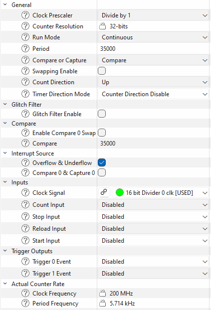

This guide covers clock-frequency verification, timer-based interrupt checks, timer/counter validation, and PWM-oriented self-tests.
Interrupt test
The interrupt self-test verifies that a timer-driven interrupt source can trigger and be observed by the corresponding interrupt-service path. Use it to confirm that the NVIC routing, interrupt enable, and terminal-count event of a dedicated timer are working end to end.
Configure the interrupt source in the Device Configurator:
- Add a dedicated TCPWM counter reserved for this self-test and give it the alias CYBSP_TIMER_INTR_TEST.
- Set the mode to Timer - Counter with continuous run and prescaler divide-by-1.
- Enable the terminal count interrupt. Depending on the device family and configurator version, this appears as TC or Overflow and Underflow.
- Drive the counter from a fixed peripheral or high-frequency clock.
The application must register SelfTest_Interrupt_ISR_TIMER() as the counter's terminal-count interrupt handler. SelfTest_Interrupt() runs the counter for a fixed measurement window of INTERRUPT_TEST_TIME (1000 us) and counts how many times that ISR fires during the window. It then compares that count against a fixed pass window, NUMBER_OF_TIMER_TICKS_LO to NUMBER_OF_TIMER_TICKS_HI, defined per CPU IP family in stl/intr/SelfTest_Interrupt.h.
Because both the 1000 us window and the pass count are fixed inside the library, you must size the counter so that it reaches terminal count roughly NUMBER_OF_TIMER_TICKS_LO to NUMBER_OF_TIMER_TICKS_HI times during that window. Unlike the counter/timer test, the interrupt test does not program the period internally: it uses the Period value you set in the Device Configurator (CYBSP_TIMER_INTR_TEST_config). Configure it as follows:
- Choose a target interrupt count near the middle of the header pass window (for example, about 12 counts for the 9/15 range, or about 24 counts for the 22/27 range).
- Size the counter period so it overflows that many times in 1000 us. In other words, set the terminal-count period to approximately 1000 us / target_count, expressed in counter input-clock cycles.
- Match the timer configuration to the selected header pass window. For PSOC™ 4 devices, stl/intr/SelfTest_Interrupt.h uses the 9/15 pass window. For PSOC™ 6, PSOC™ Control C3, XMC7000, and XMC5000 devices, it uses the 22/27 pass window. Configure the counter period for the actual counter input clock in your project so the counter still produces about 22 to 27 overflows during the fixed 1000 us measurement window.
The test returns OK_STATUS when the observed count falls inside the header pass window and ERROR_STATUS otherwise. If a correctly wired interrupt path still fails, the counter period or input clock is almost always the cause: recompute the period from the 1000 us window and the header count range above.
The following is an example of a self-test on the timer interrupt path:
cy_stc_sysint_t intrCfg =
{
.intrSrc = CYBSP_TIMER_INTR_TEST_IRQ,
.intrPriority = 3UL
};
Cy_TCPWM_Counter_Init(CYBSP_TIMER_INTR_TEST_HW, CYBSP_TIMER_INTR_TEST_NUM,
&CYBSP_TIMER_INTR_TEST_config);
__enable_irq();
NVIC_ClearPendingIRQ(intrCfg.intrSrc);
Cy_TCPWM_ClearInterrupt(CYBSP_TIMER_INTR_TEST_HW, CYBSP_TIMER_INTR_TEST_NUM,
CY_TCPWM_INT_ON_TC);
NVIC_EnableIRQ(intrCfg.intrSrc);
Cy_TCPWM_Counter_Enable(CYBSP_TIMER_INTR_TEST_HW, CYBSP_TIMER_INTR_TEST_NUM);
Cy_TCPWM_SetInterruptMask(CYBSP_TIMER_INTR_TEST_HW, CYBSP_TIMER_INTR_TEST_NUM,
CY_TCPWM_INT_ON_TC);
{
}
NVIC_DisableIRQ((IRQn_Type)CYBSP_TIMER_INTR_TEST_IRQ);
Cy_TCPWM_Counter_Disable(CYBSP_TIMER_INTR_TEST_HW, CYBSP_TIMER_INTR_TEST_NUM);
void SelfTest_Interrupt_ISR_TIMER(void)
Handle Interrupt Service Routine.
Definition SelfTest_Interrupt.c:55
uint8_t SelfTest_Interrupt(TCPWM_Type *base, uint32_t cntNum)
This function performs the interrupt execution self test.
Definition SelfTest_Interrupt.c:82
#define OK_STATUS
Test passed / operation completed successfully.
Definition SelfTest_common.h:91
Clock test
The clock test verifies system clock frequency by comparing two independent clocks:
- Tested clock (high-frequency): TCPWM timer driven by the system or peripheral clock, such as an HF clock derived from PLL or IMO
- Reference clock (low-frequency): WDT counter driven by ILO or WCO
The clocks must be independent. If the WCO is available, use it as the reference clock for better accuracy compared to the ILO. The test measures how many WDT ticks occur during a fixed TCPWM period of 1000 us to detect whether the system clock is running too fast or too slow.
Configure the TCPWM timer in the Device Configurator with the appropriate clock source and frequency settings:

These screenshot values are specific to one PSOC™ Control C3 M6 configuration. Do not copy the 35000 values blindly to your project. The portable configuration rule is:
- Use a dedicated TCPWM counter for the clock self-test.
- Set TCPWM mode to Timer - Counter with continuous run, up-counting, and prescaler divide-by-1.
- Enable the terminal count interrupt. Depending on the device family and configurator version, this appears as TC or Overflow and Underflow.
- Drive that TCPWM counter from a fixed high-frequency clock that is independent from the WDT reference clock.
- Size the timer for a 1000 us measurement window.
Base the configuration on the clock path that actually feeds the selected TCPWM counter in your project:
- determine the real timer input frequency from the chosen peripheral or HF clock source
- compute Period and Compare0 from that frequency using the 1000 us rule above
- on PSOC™ Control C3 devices, make sure STL_CLOCK_SOURCE_HFCLOCK matches the HF clock index driving the timer
To confirm the formula, a few worked examples:
- 35 MHz timer clock -> Period = 35000, Compare0 = 35000
- 48 MHz timer clock -> Period = 48000, Compare0 = 48000
- 350 MHz timer clock -> Period = 350000, Compare0 = 350000
- 32.768 MHz timer clock -> Period = 32768, Compare0 = 32768
Always start from the actual input frequency of the TCPWM counter in your project. Do not match these numbers to a device name — the same device family can run at a different frequency depending on your clock configuration.
For PSOC™ Control C3 devices, you can override STL_CLOCK_SOURCE_HFCLOCK in the project's root Makefile, for example:
DEFINES+=STL_CLOCK_SOURCE_HFCLOCK=0u
The test returns PASS_COMPLETE_STATUS when measurement is complete.
The following is an example of a self-test on the Clock block:
Cy_WDT_Unlock();
Cy_WDT_SetIgnoreBits(IGNORE_BITS_CLK_TEST);
Cy_WDT_ClearInterrupt();
Cy_WDT_Enable();
Cy_WDT_Lock();
Cy_TCPWM_Counter_Init(CYBSP_CLOCK_TEST_TIMER_HW, CYBSP_CLOCK_TEST_TIMER_NUM,
&CYBSP_CLOCK_TEST_TIMER_config);
Cy_TCPWM_Counter_SetCounter(CYBSP_CLOCK_TEST_TIMER_HW, CYBSP_CLOCK_TEST_TIMER_NUM, 0u);
cy_stc_sysint_t intrCfg =
{
.intrSrc = CYBSP_CLOCK_TEST_TIMER_IRQ,
.intrPriority = 3UL
};
NVIC_EnableIRQ(intrCfg.intrSrc);
Cy_TCPWM_Counter_Enable(CYBSP_CLOCK_TEST_TIMER_HW, CYBSP_CLOCK_TEST_TIMER_NUM);
Cy_TCPWM_SetInterruptMask(CYBSP_CLOCK_TEST_TIMER_HW, CYBSP_CLOCK_TEST_TIMER_NUM, CY_TCPWM_INT_ON_TC);
uint8_t status =
SelfTest_Clock(CYBSP_CLOCK_TEST_TIMER_HW, CYBSP_CLOCK_TEST_TIMER_NUM);
{
}
uint8_t SelfTest_Clock(TCPWM_Type *base, uint32_t cntNum)
Performs Clock test and verifies if the measured clock frequency is in the accuracy range.
Definition SelfTest_Clock.c:100
void SelfTest_Clock_ISR_TIMER(void)
Handle Interrupt Service Routine.
Definition SelfTest_Clock.c:57
#define PASS_COMPLETE_STATUS
Multi-call self-test: the test completed and the final result is available.
Definition SelfTest_common.h:160
#define PASS_STILL_TESTING_STATUS
Multi-call self-test (Flash, Clock, Configuration Registers, I2C, UART, SPI): the test is still runni...
Definition SelfTest_common.h:158
Counter/timer test
The counter/timer self-test validates a dedicated TCPWM timer/counter instance by confirming that its count advances by the expected number of clock cycles within a fixed measurement window. Use it to detect a stalled, mis-clocked, or non-incrementing timer block.
Configure the counter in the Device Configurator:
- Add a dedicated TCPWM counter reserved for this self-test and give it the alias CYBSP_TIMER_COUNTER_TEST.
- Set the mode to Timer - Counter with continuous run, up-counting, and prescaler divide-by-1.
- Enable the counter interrupt so its interrupt signal and IRQ are generated. The self-test uses the compare (CC) event; SelfTest_Timer_Counter_init() installs the handler and sets the interrupt mask to CY_TCPWM_INT_ON_CC itself, so you only need the interrupt to be routed, not a specific event preselected.
- Drive the counter from a fixed peripheral or high-frequency clock (see the minimum-frequency rule below).
The self-test programs the counter period, compare, and count values internally, so the Period and Compare you set in the configurator are overwritten and do not affect the result. The fixed values live in stl/timer_counter/SelfTest_Timer_Counter.h: TIMER_COUNTER_TEST_PERIOD (65535) and TIMER_COUNTER_TEST_COMPARE (50000). SelfTest_Counter_Timer() starts the counter, waits for the compare interrupt, and checks that the captured count lands inside the fixed pass window TIMER_COUNTER_COUNT_LOW/TIMER_COUNTER_COUNT_HIGH (48800 to 51200).
The one configurator setting that does affect the result is the counter input-clock frequency. The counter must reach the compare value (50000) before the fixed TIMER_COUNTER_TIMEOUT (2500 us) elapses, otherwise the test times out and returns ERROR_STATUS even on a healthy timer. That sets a minimum input clock of about TIMER_COUNTER_TEST_COMPARE / TIMER_COUNTER_TIMEOUT = 50000 counts / 2500 µs = 20 counts/µs = 20 MHz. Drive the counter from a clock at or above that frequency. If a correctly wired counter still fails, a too-slow input clock is the most likely cause.
The test returns OK_STATUS when the captured count falls inside the pass window and ERROR_STATUS otherwise (including the timeout case).
The following is an example of a self-test on the timer/counter block:
CYBSP_TIMER_COUNTER_TEST_NUM,
&CYBSP_TIMER_COUNTER_TEST_config,
(IRQn_Type)CYBSP_TIMER_COUNTER_TEST_IRQ);
{
}
NVIC_DisableIRQ((IRQn_Type)CYBSP_TIMER_COUNTER_TEST_IRQ);
Cy_TCPWM_Counter_Disable(CYBSP_TIMER_COUNTER_TEST_HW, CYBSP_TIMER_COUNTER_TEST_NUM);
uint8_t SelfTest_Counter_Timer(void)
Performs Timer Counter test by checking that the counter is incrementing.
void SelfTest_Timer_Counter_init(TCPWM_Type *base, uint32_t cntNum, cy_stc_tcpwm_counter_config_t const *config, IRQn_Type intsrc)
Initialize the counter and initialize the timer interrupt for the Self test.
PWM test
The PWM self-test validates that a PWM output actually produces the duty cycle it is programmed to. The library drives a dedicated PWM at a fixed 33% duty cycle with a 1000 us period (PWM_TIME), samples the output level in a polling loop across about five periods, and passes when the measured off-to-on time ratio is near 2:1. Use it to detect a PWM block that is stuck, mis-clocked, or generating the wrong duty cycle.
Configure the PWM in the Device Configurator:
- Add a dedicated TCPWM in PWM mode reserved for this self-test and give it the alias CYBSP_PWM.
- Its interrupt must be available (SelfTest_PWM_init() installs the terminal-count ISR and enables the IRQ itself, so you only need the interrupt routed).
- Drive the PWM counter from a fixed high-frequency clock (see the clock-source rule below).
The self-test overwrites the period and compare values internally, so the Period and Compare you set in the configurator do not affect the result. It computes the period at run time from the live counter clock frequency and the clockPrescaler in CYBSP_PWM_config, then sets a 33% duty cycle. The measurement thresholds live in stl/pwm/SelfTest_PWM.h (PWM_TIME = 1000 us, PWM_TIME_TIMEOUT = 10000 us) and in stl/pwm/SelfTest_PWM.c (the pass window is an off-to-on ratio between 1.875 and 2.125, that is, the ~2:1 ratio of a 33% duty cycle). The test returns OK_STATUS when the measured ratio falls inside that window and ERROR_STATUS otherwise.
Because the library derives the period from the clock, the one setting that affects the result is the clock feeding the counter. On PSOC™ Control C3 the period is computed from the high-frequency clock whose index is STL_PWM_SOURCE_HFCLOCK (default 3). Drive the CYBSP_PWM counter from that HF clock, or override the macro in the project's root Makefile to match the HF clock that actually drives it, for example:
DEFINES+=STL_PWM_SOURCE_HFCLOCK=0u
How the output is sampled differs by device family, which changes whether you need to wire a pin:
- PSOC™ Control C3, XMC7000, and XMC5000 (TCPWM v2 and later): the test reads the PWM line-out status register directly, so the pin arguments to SelfTest_PWM() are ignored and no external pin wiring is required. The example still passes the generated PWM_IN_PIN alias so the same code compiles on devices that need it.
- PSOC™ 4 (M0S8 TCPWM): the test reads a physical GPIO with Cy_GPIO_Read(), so you must pass the port and pin that carry the PWM output, and that pin must be routed to the PWM line in the configurator.
If a correctly configured PWM still fails on PSOC™ Control C3, the most likely cause is STL_PWM_SOURCE_HFCLOCK not matching the HF clock that drives the counter: the period is then computed from the wrong frequency and the sampled ratio falls outside the pass window. On PSOC™ 4, a failure most often means the pin argument does not point at the pin carrying the PWM output.
The following is an example of a self-test on the PWM block:
&CYBSP_PWM_config, (IRQn_Type)CYBSP_PWM_IRQ);
{
{
}
}
uint8_t SelfTest_PWM_init(TCPWM_Type *base, uint32_t cntNum, cy_stc_tcpwm_pwm_config_t const *config, IRQn_Type intr_src)
Initialize Timer interrupt for the Self test.
uint8_t SelfTest_PWM(GPIO_PRT_Type *pinbase, uint32_t pinNum)
This function performs the PWM test and verifies that the duty cycle set is actually achieved in the ...
void SelfTest_PWM_DeInit(IRQn_Type intr_src)
De-initialize the PWM self test, disabling the peripheral and its interrupt.
#define PWM_INIT_ERROR_STATUS
PWM init: initialization failed before the self-test could run.
Definition SelfTest_common.h:96
PWM GateKill test
The PWM GateKill self-test confirms that a PWM counter has actually stopped after its kill (fault) input was asserted. On motor-control and power-conversion designs the kill signal must shut the PWM drivers down quickly; this test gives you a software check that the kill took effect on the counter.
How the test decides pass/fail (SelfTest_PWM_GateKill() in stl/pwm_gatekill/SelfTest_PWM_GateKill.c): it reads the TCPWM counter, waits 10 ms, then reads it again. If the two reads are equal, the counter is not advancing and the test returns OK_STATUS; if they differ, the counter is still running and it returns ERROR_STATUS. There are no configurable thresholds and no timeout macro; the only fixed value is the 10 ms delay between the two reads, hardcoded in that source file.
This makes the outcome depend entirely on the state you put the PWM in before the call, so the two-phase behavior matters. Because of this, SelfTest_PWM_GateKill() requires the kill to already be asserted when it is called; it does not assert the kill for you. The example demonstrates both phases so the check is self-verifying:
- With the PWM running (kill not asserted), the two reads differ and the test returns ERROR_STATUS.
- After the kill is asserted so the counter halts, the two reads match and the test returns OK_STATUS.
Configure the PWM in the Device Configurator:
- Add a dedicated TCPWM in PWM mode reserved for this self-test and give it the alias CYBSP_PWM_GATEKILL.
- Enable stop on kill so an asserted kill halts the counter (parameter pwmstoponkill). Without it, the counter keeps running after the kill and the test reports ERROR_STATUS.
- Choose the kill source. To exercise a hardware kill line, route one of the Kill0Input/Kill1Input inputs from a pin and assert that pin before the test. The example instead asserts the kill in software with Cy_TCPWM_TriggerStopOrKill_Single(), which needs no external wiring.
This test only verifies that the counter stopped between the two reads. It does not confirm the physical output pin reached its safe state; that functional pin-level verification is out of scope for this self-test. If a healthy design still fails after the kill is asserted, the most likely cause is stop on kill not being enabled, or the kill source not actually being asserted before the call.
The following is an example of a self-test on the PWM gate-kill path:
Cy_TCPWM_PWM_Init(CYBSP_PWM_GATEKILL_HW, CYBSP_PWM_GATEKILL_NUM,
&CYBSP_PWM_GATEKILL_config);
Cy_TCPWM_PWM_Enable(CYBSP_PWM_GATEKILL_HW, CYBSP_PWM_GATEKILL_NUM);
Cy_TCPWM_TriggerReloadOrIndex_Single(CYBSP_PWM_GATEKILL_HW, CYBSP_PWM_GATEKILL_NUM);
{
}
Cy_TCPWM_TriggerStopOrKill_Single(CYBSP_PWM_GATEKILL_HW, CYBSP_PWM_GATEKILL_NUM);
{
}
Cy_TCPWM_PWM_Disable(CYBSP_PWM_GATEKILL_HW, CYBSP_PWM_GATEKILL_NUM);
uint8_t SelfTest_PWM_GateKill(TCPWM_Type *base, uint32_t cntNum)
The TCPWM base and CntNum is passed to check whether the counter is stopped or not.
#define ERROR_STATUS
Test failed or a generic error occurred.
Definition SelfTest_common.h:93